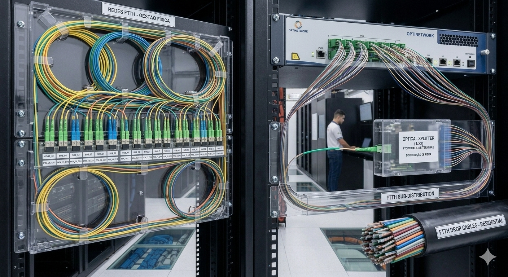

Soluções completas para cada camada da sua TI
Da infraestrutura física ao software, passando por segurança eletrônica e monitoramento — tudo integrado em um único parceiro tecnológico.
Atendimento técnico ágil e estruturado
Oferecemos suporte técnico completo com atendimento remoto e presencial, garantindo que os problemas do seu ambiente de TI sejam resolvidos com rapidez e eficiência. Nossa equipe especializada atua desde o help desk para usuários até a manutenção de servidores e equipamentos.
Com SLA definido e acompanhamento de chamados, você tem previsibilidade e transparência em cada atendimento.
- Help desk e atendimento a usuários finais
- Suporte remoto com acesso seguro
- Manutenção preventiva e corretiva
- Diagnóstico e resolução de incidentes
- Gestão de chamados com SLA
- Atendimento presencial quando necessário
Estratégia tecnológica orientada a resultados
Ajudamos sua empresa a tomar as melhores decisões tecnológicas com base em diagnóstico técnico aprofundado, análise de custos e planejamento de longo prazo. Nossa consultoria transforma TI em vantagem competitiva.
Do levantamento de ambiente ao roadmap de evolução, entregamos clareza e direção para o seu departamento de tecnologia.
- Diagnóstico completo de ambiente
- Planejamento de infraestrutura
- Roadmap tecnológico
- Gestão de fornecedores e contratos
- Análise de custos de TI
- Orientação para compliance e segurança
Conectividade estável para sua operação
Projetamos, instalamos e gerenciamos redes corporativas completas — desde a segmentação por VLANs até a configuração de Wi-Fi de alta densidade para ambientes com muitos usuários simultâneos.
Nossa abordagem contempla segurança, desempenho e escalabilidade, garantindo que sua rede cresça junto com o negócio.
- Projeto e instalação de redes LAN/WAN
- Wi-Fi corporativo de alta performance
- Switches gerenciados com VLANs
- Roteadores e firewall configurados
- VPN segura entre unidades
- Diagnóstico e otimização de rede existente
Instalação e manutenção de redes de fibra
Somos especialistas em redes de fibra óptica FTTH para provedores de internet, condomínios e empresas. Executamos desde o lançamento de cabos e fusão até a configuração de OLT, splitters e equipamentos ONT.
Trabalhamos com precisão e agilidade, garantindo baixa latência, alta velocidade e máxima confiabilidade na sua rede óptica.
- Lançamento e instalação de cabo óptico
- Fusão de fibra com equipamento homologado
- Configuração de OLT e splitters
- Instalação de ONT e roteadores FTTH
- Certificação e OTDR do link
- Manutenção e reparo de redes ópticas

Segurança física inteligente
Implantamos sistemas completos de controle de acesso físico com tecnologias biométricas, cartão RFID e reconhecimento facial — integrando entradas, saídas e catracas em um sistema de gestão centralizado.
Toda a solução pode ser integrada ao CFTV e ao software de RH para controle de jornada e registro de ponto eletrônico.
- Leitores biométricos digitais e faciais
- Controle por cartão RFID e tags
- Catracas e torniquetes
- Fechaduras eletrônicas e eletromagnéticas
- Software de gestão de acesso
- Integração com CFTV e ponto eletrônico
Vigilância eletrônica completa e inteligente
Projetamos e instalamos sistemas de CFTV com câmeras IP de alta resolução, gravação contínua em DVR/NVR e acesso remoto via aplicativo — garantindo segurança e rastreabilidade em tempo real para sua empresa.
Nossos sistemas suportam análise de vídeo com IA, reconhecimento de placas, reconhecimento facial e alertas inteligentes para segurança proativa.
- Câmeras IP Full HD, 4K e dome
- DVR/NVR com armazenamento local e nuvem
- Monitoramento remoto via app
- Câmeras PTZ e com IA embarcada
- Reconhecimento de placas (LPR)
- Integração com controle de acesso
Infraestrutura física organizada e certificada
Executamos projetos de cabeamento estruturado seguindo as normas ABNT NBR 14565, garantindo organização, rastreabilidade e capacidade de expansão para sua rede corporativa.
Do rack ao ponto de rede, cada instalação é documentada, identificada e certificada para garantir máxima performance e facilidade de manutenção futura.
- Cabeamento Cat5e, Cat6 e Cat6A
- Rack, patch panel e organização de cabos
- Certificação de pontos com testador
- Identificação e documentação completa
- Normas ABNT NBR 14565
- Reformas e organização de cabeamento existente
Visibilidade total da sua infraestrutura
Nossa Central de Operações de Rede (NOC) monitora 24/7 todos os ativos do seu ambiente: servidores, switches, links, câmeras, controles de acesso e aplicações — com alertas inteligentes e resposta proativa a incidentes.
Dashboards em tempo real, relatórios de disponibilidade e escalonamento automático garantem que nada passe despercebido na sua operação. Conheça em detalhes o Software NOC, recursos, fluxo de operação e projetos já entregues.
Conhecer o Software NOC
Software sob medida para o seu negócio
Desenvolvemos sistemas, APIs e aplicações web personalizadas para automatizar processos, integrar setores e aumentar a produtividade da sua equipe. Cada solução é pensada para resolver um problema real do negócio.
Utilizamos tecnologias modernas e metodologias ágeis para entregar software de qualidade com previsibilidade e alinhamento às necessidades do cliente.
- Sistemas web e aplicações corporativas
- APIs e integrações entre sistemas
- Automação de processos e fluxos
- Dashboards e relatórios gerenciais
- Portais de gestão e monitoramento
- Manutenção e evolução de sistemas existentes
Como nossos serviços se conectam
🔍 Monitorar
NOC identifica alertas, anomalias e comportamentos fora do padrão antes que se tornem incidentes.
🎯 Atender
Suporte técnico responde com agilidade — remoto ou presencial — com classificação de prioridade.
🔧 Corrigir
Ação técnica precisa para restabelecer serviços, corrigir configurações e reduzir o impacto.
📈 Evoluir
Melhorias contínuas em infraestrutura, sistemas, redes e segurança para prevenir recorrências.